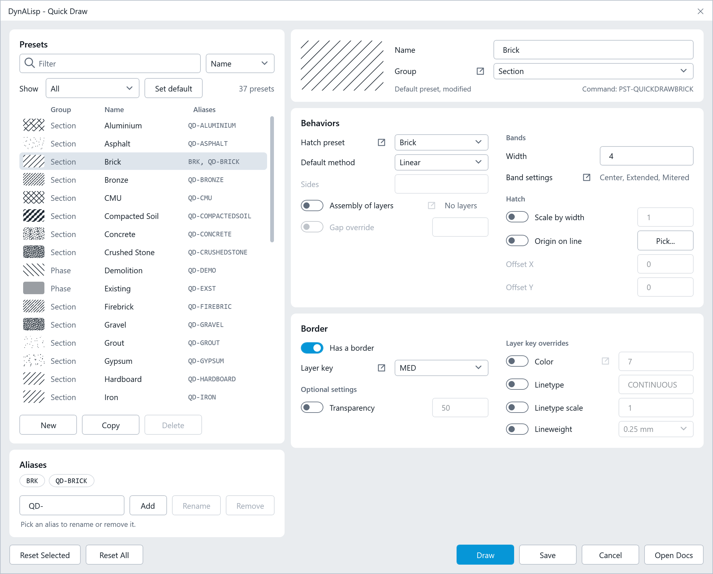

Dessin rapide (Quick Draw)
| Syntaxe | DYL-QUICKDRAW (Quick Draw window) + 35 preset commands – see Commands |
| Requis | AutoCAD pour Windows (ActiveX / Visual LISP); les motifs de hachures listés ci-dessous sur le chemin de recherche; les clés de calque Dynalisp (Clés de calque), le moteur de préréglages (Remote\Dyl-Presets.lsp) et les matériaux (Remote\Dyl-Materials.lsp), chargés au démarrage |
| Licence | Licence publique générale GNU v3 |
Description
Dessinez et hachurez en une commande : un préréglage dessine son contour avec l'outil de dessin qu'il dit (une polyligne, un rectangle, une bande le long d'une ligne...), le met sur le bon calque et le remplit de sa hachure, à l'échelle du dessin. Trente-cinq préréglages sont prêts (béton, brique, isolant, les trames de phase...), et vous créez les vôtres dans la fenêtre Quick Draw.

Utilisation
- Dessinez un préréglage – tapez son alias, QD-BRICK ou PL-BRICK... (le tableau ci-dessous), ou choisissez sa vignette dans la galerie Quick Draw (Dessin rapide dans le ruban). Dessinez le contour comme les invites le disent; la hachure suit.
- Un préréglage QD-* demande comment le dessiner (polyligne, rectangle, cercle, bande linéaire...); un préréglage PL-* dessine toujours une polyligne.
- Modifiez ou ajoutez des préréglages – tapez Dyl-QuickDraw (Gestion du dessin rapide dans le ruban) : choisissez un préréglage, changez son matériau, sa façon d'être dessiné, sa hachure et sa bordure, ou cliquez New. Un nouveau préréglage reçoit une commande à lui; donnez-lui un alias dans Dyl-Suite.
Fenêtre Quick Draw
La fenêtre a la liste des préréglages à gauche, et le préréglage affiché à droite : son nom et son groupe en haut, puis son Preview sur toute la largeur, et ses Parameters en dessous, en deux colonnes (Drawing à gauche, Bands à droite, puis Hatch et Border en dessous), ses alias en bas. Une valeur que le préréglage n'utilise pas (la largeur d'un préréglage dessiné avec une polyligne, la valeur d'un remplacement désactivé) est grisée.
- Filter / tri – au-dessus de la liste : tapez une partie d'un groupe, d'un nom, d'un alias ou d'un matériau pour ne lister que les préréglages qui l'ont (toute casse; la liste suit la frappe; vide : tous les préréglages). La liste à côté les trie par nom (par défaut) ou par groupe puis par nom, gardé pour la session. Le nombre de préréglages listés est donné dessous (12 of 37, No match).
- Show / Set default – Show ne liste que les préréglages d'un groupe (All : tous les groupes); le filtre et le tri s'appliquent à l'intérieur. Set default fait du groupe affiché celui sur lequel la fenêtre s'ouvre, à chaque fois et dans chaque dessin; faites d'All la valeur par défaut pour ouvrir de nouveau sur tous les groupes. Un groupe par défaut qui n'a plus aucun préréglage ouvre sur All.
- Liste des préréglages – la hachure de chaque préréglage, son groupe, son nom et ses alias (les noms courts qui le lancent). Double-cliquez un préréglage pour le dessiner.
- Plusieurs préréglages à la fois – Ctrl+clic ajoute un préréglage à la sélection (ou l'en retire), Maj+clic sélectionne une plage. Le haut de la fenêtre affiche 3 presets selected et les champs montrent les valeurs du préréglage cliqué en premier : une valeur changée (le matériau aussi, même par son bouton ouvrir, et l'origine trouvée avec Pick...) est donnée à chaque préréglage sélectionné, leurs autres valeurs restent telles quelles. Le nom, Copy et les alias sont pour un seul préréglage (grisés); Delete les retire tous (seulement quand ils sont tous personnalisés, avec leurs alias), Reset Selected réinitialise ceux par défaut parmi eux; Draw dessine le préréglage affiché.
- Name, Group – en haut à droite. Dessous, le statut du préréglage (Default preset, Default preset, modified, Custom preset) et sa commande (Command: PST-QUICKDRAWBRICK). Le groupe est choisi parmi les groupes, les mêmes dans les fenêtres Quick Draw, Quick Shape et Materials; le bouton carré ouvrir juste à sa gauche ouvre la fenêtre Preset Groups pour les ajouter, renommer, retirer ou ordonner. Un groupe qui n'est pas dans cette liste reste sélectionnable.
- Preview – le préréglage tel que le montre la Quick Draw Gallery : sa hachure telle qu'elle s'imprime (une bande vide tant que Has a hatch est décoché), entourée tant que Has a border est coché; un assemblage en ses couches côte à côte, contourné avec ses Border lines, une ligne entre ses couches avec ses Dividing lines, une couche qui a sa propre bordure entre deux lignes. À côté d'un assemblage, en gris pâle, son épaisseur totale et chacune de ses couches avec son épaisseur, dans les unités du dessin, puis sa résistance thermique et sa masse (voir Assembly Presets).

- Material – le premier réglage de la zone Parameters (voir Paramètres), grisé tant que le préréglage est un assemblage : chaque couche est alors hachurée avec son propre matériau. Il liste les matériaux du groupe du préréglage, par nom; le matériau du préréglage reste dans la liste quand il est d'un autre groupe, affiché groupe - nom, et un groupe sans matériau les liste tous. Choisir un autre groupe liste ses matériaux : quand celui du préréglage n'en fait pas partie, le premier est donné aux préréglages sélectionnés. Un matériau supprimé reste dans la liste, marqué (missing material), jusqu'à ce qu'un autre soit choisi. Le bouton carré ouvrir à sa gauche ouvre la fenêtre Materials sur ce matériau : celui qui y est sélectionné quand elle est fermée par OK est donné au préréglage, si bien qu'un nouveau matériau peut être fait et choisi d'un coup. La fenêtre Materials enregistre par son propre OK, même si Quick Draw est ensuite annulé.
- View – sous Material, le préréglage de hachure du matériau avec lequel le préréglage est dessiné : Cut, l'objet coupé dans un plan ou une coupe, ou Surface, sa face vue en élévation (celui de Cut quand le matériau n'a pas de Surface). QD-BRICK dessine la Brick d'un mur en coupe, QD-MODULAR la même Brick en élévation. Grisé avec Material pour un assemblage : ses couches sont toujours dessinées avec leur Cut, une bande de couches étant une coupe.
- Valeurs vérifiées à la frappe – un nom déjà pris par un autre préréglage, un champ vide ou une valeur qui n'est pas un nombre affiche son message au bas de la fenêtre; la valeur n'est pas gardée, et on ne peut ni sélectionner un autre préréglage ni fermer la fenêtre (sauf par Cancel) avant de l'avoir corrigée.
- New ajoute un préréglage personnalisé après celui affiché, dans le même groupe, son nom prêt à être tapé. Copy ajoute un préréglage personnalisé avec les valeurs de celui affiché. Delete retire les préréglages personnalisés sélectionnés et leurs alias, après confirmation (les préréglages par défaut ne peuvent pas être supprimés, seulement réinitialisés).
- Aliases – en bas de la zone Parameters, les alias du préréglage affiché (les noms courts qui le lancent, p. ex. QD-BRICK) : cliquez-en un pour le choisir. Add crée l'alias tapé, Rename donne le nom tapé à l'alias choisi, Remove supprime l'alias choisi. La case commence par PL- pour un préréglage dessiné avec une polyligne, QD- sinon. Un alias ne peut pas être le nom d'une commande, d'un autre alias ou d'un alias d'AutoCAD; la ligne sous la case dit pourquoi un alias est refusé. Un nouveau préréglage personnalisé reçoit sa commande (d'après son nom) avec son premier alias. Les alias sont enregistrés avec Draw ou Save, et Cancel les annule.
- Reset Selected – (en bas à gauche) rétablit les valeurs par défaut des préréglages par défaut sélectionnés. Reset All – rétablit les valeurs par défaut de chaque préréglage par défaut, après confirmation; les préréglages personnalisés sont gardés (renommés si un nom rétabli est déjà utilisé).
- Draw (ou Entrée) enregistre les préréglages et dessine celui affiché, Save enregistre sans dessiner, Cancel annule chaque changement fait dans la fenêtre.
- Open Docs – ouvre cette page; la fenêtre reste ouverte.

Les boutons ouvrir (Material, Group, Assembly, Custom band settings, Has a hatch, Has a border, et la clé de calque et la couleur des fenêtres Hatch Settings et Border Settings) ferment la fenêtre un instant et la rouvrent telle qu'elle était, la valeur choisie remplie. La fenêtre se rouvre sur le dernier préréglage utilisé pendant la session.
Matériaux
Un matériau est ce dont un objet est fait (Brick, Extruded Polystyrene), partagé par chaque préréglage qui l'utilise, de Quick Draw et de Quick Shape, et par les couches des assemblages : son nom, son groupe, ses données, et les préréglages de hachures avec lesquels il est dessiné. Un préréglage de hachure est la hachure elle-même (motif, échelle, angle, clé de calque...), partagée à son tour par les matériaux qui ont la même apparence : Extruded Polystyrene, Expanded Polystyrene et Polyisocyanurate sont tous dessinés avec Rigid Insulation. Un matériau en a deux, Cut (en coupe) et Surface (en élévation) : un préréglage dessine celui de sa View.
Le bouton ouvrir à côté de Material ouvre la fenêtre Materials, qui a la même liste et les mêmes boutons que cette fenêtre (New, Copy, Delete, Reset Selected, Reset All), sans alias : OK enregistre les matériaux et donne celui sélectionné au préréglage, Cancel annule les changements. Chaque préréglage par défaut utilise le matériau par défaut du même nom (QD-BRICK → Brick). Un matériau supprimé reste dans la liste du préréglage, marqué (missing material) : dessiner le préréglage affiche une alerte jusqu'à ce qu'un autre matériau soit choisi.
Échelle du dessin
Une hachure non annotative garde l'échelle de son matériau dans chaque dessin. Avec Adaptive scaling (suivre l'échelle du dessin) coché (dans la zone Hatch scale, grisé tant qu'Annotative est coché), son échelle suit l'échelle du dessin : l'échelle d'annotation du dessin (CANNOSCALE, réglée par Dyl-SwitchDrawingScale).
L'échelle d'un matériau est toujours réglée pour une échelle de dessin de 1:1. Quand la hachure est dessinée, son échelle est multipliée par l'échelle du dessin : dessinée à 1:50, par 50; à 1:5, par 5. La ligne sous la case donne le facteur dans le dessin courant (This drawing is at 1:50: hatch scale x50.). Un matériau d'un fichier plus ancien réglé pour une autre échelle de dessin voit son échelle convertie à 1:1 quand il est lu : il se dessine ainsi à la même taille.
La hachure n'est pas mise à jour quand l'échelle du dessin change ensuite : elle garde l'échelle avec laquelle elle a été dessinée. Le résumé du préréglage affiche follows the drawing scale pour un tel matériau.
Paramètres
La façon dont un préréglage se dessine se règle dans le préréglage lui-même, dans la zone Parameters de la fenêtre Quick Draw, en deux colonnes : le matériau et sa vue, la méthode et les réglages de Polygon et de Shrinkwrap, puis les bandes de Linear et d'Offset (la largeur, la Justification, Assembly, et Custom band settings : à quoi la hachure est alignée, son échelle et son origine le long de la ligne, les extrémités et les coins, réglés dans la fenêtre Band Settings), puis sous Hatch Has a hatch, la hachure du préréglage réglée dans la fenêtre Hatch Settings (voir Réglages de hachure), et sous Border Has a border, la bordure du préréglage réglée dans la fenêtre Border Settings (voir Réglages de bordure). Un matériau contient ce dont l'objet est fait et ses préréglages de hachures : les fenêtres Materials et Hatch Presets n'ont ni comportements ni bordure. Un réglage est grisé à moins que Default method soit sa méthode ou Ask when drawn (la méthode choisie au dessin les utilise aussi). Deux préréglages peuvent partager un matériau et le dessiner différemment : QD-BRICK demande la méthode, PL-BRICK est le même matériau Brick avec Default method réglé sur Polyline.
| Paramètre | Use |
|---|---|
| Default method | La méthode de saisie : Ask when drawn (demandée à la ligne de commande, par défaut), Polyline, Rectangle, Circle, Polygon, Ellipse, Shrinkwrap, Pick internal points, Select closed objects, Linear, Offset ou Replace hatches. Voir Méthode par défaut. |
| Width | La largeur de la bande, en unités de dessin : 100; plusieurs largeurs séparées par des virgules, 100,150,200, sont proposées à la ligne de commande chaque fois; vide : la dernière largeur utilisée (demandée la première fois). |
| Justification | Linear seulement : où est la ligne dessinée dans la bande. Ask when drawn (demandée avant le point de départ, la dernière donnée par défaut), Center, Edge (la ligne est un bord de la bande, la bande du côté choisi une fois la ligne dessinée, comme avec Offset) ou Structural layer (un assemblage : la ligne au milieu de sa couche structurale, voir Assemblages; Center s'il n'en a pas). Un assemblage a une seule justification, la ligne de toute la bande, quel que soit le préréglage d'assemblage qu'il utilise. Un préréglage d'une version antérieure sur Left border ou Right border est sur Edge. |
| Assembly | Facultatif. La bande est faite de plusieurs couches côte à côte (un mur : gypse, montants et isolant, revêtement intermédiaire, brique...), un préréglage d'assemblage choisi dans la liste à côté (grisée tant que la case n'est pas cochée), fait dans la fenêtre Assembly Presets qu'ouvre le bouton ouvrir entre les deux; un assemblage qui n'existe plus est marqué manquant. Plusieurs préréglages peuvent utiliser le même assemblage. Width montre alors leur total (grisé : la largeur de la bande), et chaque couche est hachurée avec son propre matériau (Material et Custom band settings sont grisés : chaque couche a ses propres réglages de bande). Voir Assemblages. |
| Custom band settings | Facultatif (Linear, Offset; grisé pour un assemblage). Décoché : les bandes se dessinent avec les valeurs par défaut (la hachure le long de la ligne à l'échelle de son matériau, extrémités d'équerre, coins en onglet, joints dessinés), indiquées en dessous. Coché : le bouton ouvrir à côté ouvre la fenêtre Band Settings : à quoi la hachure est alignée (Line ou Drawing origin), Scale by width et Origin on line (ci-dessous), les extrémités et les coins des bandes, chacun avec un croquis de ce qui est choisi. Le texte en dessous résume les extrémités et les coins (Extended, Lapped). Les réglages sont gardés quand elle est décochée. Un préréglage d'une version antérieure qui ne se dessinait pas avec les valeurs par défaut l'a cochée, et se dessine donc comme avant. Voir Extrémités et coins. |
| Scale by width | Facultatif (Linear, Offset; dans la fenêtre Band Settings). L'échelle de la hachure est la largeur de la bande fois ce facteur, à la place de l'échelle ci-dessus (son facteur d'unités et l'échelle du dessin compris) : un facteur de 0,01 hachure une bande de 100 à 1 et une bande de 200 à 2 : le motif épouse la bande. La bande n'est alors jamais annotative, même avec Annotative coché : son échelle est une taille dans le dessin, que l'échelle d'annotation multiplierait (une bande de 25 à 1:50 serait hachurée à 1250). |
| Origin on line, Offset X, Offset Y | Facultatif (Linear, Offset; dans la fenêtre Band Settings). Le motif de chaque segment commence sur la ligne au début du segment, déplacé le long de la ligne de X (0 : au début du segment) et en travers de Y (0 : sur la ligne; positif : vers l'intérieur de la bande), p. ex. pour aligner un motif d'isolant sur le bord. Avec Scale by width coché, X et Y sont en unités du motif : ils sont multipliés par l'échelle de la hachure (largeur x facteur), et le motif reste aligné à chaque largeur (avec un facteur de 1, Y = 0,5 est la moitié de la largeur de la bande). |
| Pick... | (Linear; dans la fenêtre Band Settings) Trouve X et Y pour vous. La fenêtre se ferme et une bande d'essai du matériau est dessinée au milieu de la vue, avec les valeurs en cours de modification (sa largeur, la première quand il y en a plusieurs, sinon la dernière utilisée, sinon demandée; sa Justification, la bande au-dessus de la ligne pour Edge; son origine actuelle), le long de l'axe X du SCU : la ligne rouge est la ligne dessinée, qui part du cercle rouge, et la croix magenta est l'origine utilisée maintenant (ses X et Y actuels). L'essai est assez long, et assez large, pour montrer le motif entier au moins deux fois (2,5 répétitions); quand il devient alors plus large que la bande, les vrais bords de la bande sont affichés en vert. Choisissez le point du motif à mettre sur la ligne (les accrochages aux objets fonctionnent, p. ex. sur le bord d'un isolant de la hachure) : le motif est déplacé pour que ce point arrive au début de la ligne (le cercle rouge), sur le bord ou la ligne médiane choisis par Justification, les nouveaux X et Y sont remplis et Origin on line est coché, puis la fenêtre Band Settings se rouvre. L'essai est effacé et la vue rétablie; Entrée ou Échap ne change rien. L'essai utilise les clés de calque du matériau : leurs calques sont créés s'ils manquent. |
| Sides | Le nombre de côtés de la méthode Polygon; vide : demandé par POLYGON. |
| Gap override | Facultatif (Shrinkwrap). Décoché : Shrinkwrap commence avec un écart de 0 et, quand aucun contour n'est trouvé, essaie des écarts plus grands par le pas d'écart de Dyl-Settings (Drawing Settings). Coché : il commence avec le Gap ci-dessous; un écart vide est demandé chaque fois. Les écarts plus grands sont essayés dans tous les cas. Voir Contour extérieur – Tolérance d'écart. |
| Gap | La tolérance d'écart de la dérogation, une valeur dans les unités du dessin, quelles qu'elles soient (sans conversion d'unités) : les objets plus proches que l'écart sont joints en un seul contour. Un préréglage d'une version plus ancienne qui avait un écart impérial et un métrique garde l'impérial (le métrique quand il n'avait que celui-là). |
| Has a hatch | Les contours sont hachurés avec le matériau; son bouton ouvrir ouvre la fenêtre Hatch Settings. Grisé pour un assemblage et pour Replace hatches. Voir Réglages de hachure. |
| Has a border | Les contours sont gardés comme bordure de la hachure; son bouton ouvrir ouvre la fenêtre Border Settings. Grisé pour un assemblage. Voir Réglages de bordure. |
Ils sont enregistrés avec le préréglage (colonnes de comportements de QuickDraw.csv, les mêmes valeurs que les colonnes de comportements de Materials.csv, qui ne sont plus modifiées). Un préréglage d'un fichier plus ancien qui était dessiné avec les comportements de son matériau (Override the behaviors décoché) reçoit ces comportements quand il est lu : il se dessine de la même façon; un préréglage enregistré avant que les préréglages aient des comportements garde la méthode Default method qu'il avait. Les préréglages Quick Shape insèrent des formes : ils n'ont pas de comportements.
Réglages de hachure
La hachure d'un préréglage est dessinée avec son matériau (motif, échelle, angle, clé de calque de hachure et ses remplacements), et le préréglage peut la mettre sur une autre clé de calque et remplacer ses propriétés, sans changer le matériau que d'autres préréglages partagent. Has a hatch, sous Hatch dans la zone Parameters, dit si elle est dessinée; le bouton carré ouvrir à côté, une fois coché, ouvre la fenêtre Hatch Settings : la clé de calque de la hachure (From material : la clé de calque de hachure de son matériau), puis les propriétés de cette clé qu'elle remplace (couleur, type de ligne, échelle du type de ligne, épaisseur de ligne) et sa transparence, chacune avec une case à cocher, comme la bordure. Le texte sous Has a hatch résume la hachure (From material, Color 8, Transparency 30). Avec plusieurs préréglages sélectionnés, la fenêtre montre la hachure du préréglage affiché, et OK la donne à tous.
| Réglage | Usage |
|---|---|
| Has a hatch | Coché (par défaut) : les contours sont hachurés. Décoché : aucune hachure n'est faite, seuls les contours sont dessinés, gardés comme bordure (un préréglage sans hachure a besoin de Has a border : la fenêtre refuse un préréglage qui n'a ni l'un ni l'autre). Grisé pour un assemblage (chaque couche a son propre Has a hatch) et pour Replace hatches, qui change des hachures déjà dessinées. |
| Layer key, Color, Linetype, Linetype scale, Lineweight, Transparency | Dans la fenêtre Hatch Settings : la clé de calque sur laquelle va la hachure (From material : celle de son matériau), et les propriétés que la hachure remplace, à la place de celles de son matériau (décochées : celles du matériau, ou de son calque). |
Ils sont enregistrés avec le préréglage (colonnes de hachure de QuickDraw.csv). Un préréglage d'un fichier plus ancien a une hachure, sur la clé de calque de son matériau, sans rien remplacer : il se dessine de la même façon.
Réglages de bordure
La bordure d'un préréglage se règle dans le préréglage lui-même (les fenêtres Materials et Hatch Presets n'ont pas de réglages de bordure). La bordure est le contour dessiné ou sélectionné autour de la hachure. Has a border, sous Border dans la zone Parameters, dit si elle est dessinée; le bouton carré ouvrir à côté, une fois la case cochée, ouvre la fenêtre Border Settings : la clé de calque de la bordure, puis les propriétés de cette clé qu'elle remplace (couleur, type de ligne, échelle du type de ligne, épaisseur de ligne) et sa transparence, chacune avec une case à cocher. Le texte sous Has a border résume la bordure (MED, Color 1, Lineweight 0.35 mm). Avec plusieurs préréglages sélectionnés, la fenêtre montre la bordure du préréglage affiché, et OK la donne à tous. Quick Shape garde ces réglages dans une zone Border settings de sa fenêtre, sans Has a border : une forme est toujours dessinée avec sa bordure.
| Paramètre | Use |
|---|---|
| Has a border | Coché : les contours sont gardés comme bordure de la hachure, sur la clé de calque de la fenêtre Border Settings. Décoché : ils sont effacés une fois hachurés, seule la hachure reste (elle n'est alors pas associative); son bouton ouvrir est grisé, et le réglage Associative du matériau n'est pas utilisé. Les objets choisis avec Select closed objects sont gardés. Grisé pour un assemblage : un assemblage n'a pas de bordure du préréglage, ses couches ont la leur. |
| Layer key, Color, Linetype, Linetype scale, Lineweight, Transparency | Dans la fenêtre Border Settings : la clé de calque sur laquelle vont les contours, et les propriétés de cette clé que la bordure remplace (décochées : celles de son calque). |
Ils sont enregistrés avec le préréglage (colonnes de bordure de QuickDraw.csv, les mêmes valeurs que les colonnes de bordure de Materials.csv, qui ne sont plus modifiées). Un préréglage d'un fichier plus ancien, enregistré avant que les préréglages aient une bordure, reçoit la bordure de son matériau quand il est lu : il se dessine de la même façon; un préréglage par défaut reçoit la bordure de son matériau par défaut.
Méthode par défaut
Un préréglage dessine avec sa méthode Default method (voir Paramètres). La Quick Draw Gallery peut le dessiner une fois avec une autre méthode, choisie sous sa vignette. Sans méthode (Ask when drawn), la méthode est demandée à la ligne de commande chaque fois que le préréglage est dessiné : Draw with [Polyline/Rectangle/Circle/pOlygon/Ellipse/sHrinkwrap/pIck/Select/Linear/oFfset/replAce] <Polyline>:. Entrée garde la méthode donnée la dernière fois (enregistrée pour les sessions suivantes).
| Méthode | Contour |
|---|---|
| Ask when drawn | Demande l'une des méthodes ci-dessous à la ligne de commande. |
| Polyline | Dessinez une polyligne avec PLINE et fermez-la. |
| Rectangle | Dessinez un rectangle avec RECTANG. |
| Circle | Dessinez un cercle avec CIRCLE. |
| Polygon | Dessinez un polygone régulier avec POLYGON, avec le nombre de côtés du préréglage (demandé s'il n'en a pas). |
| Ellipse | Dessinez une ellipse avec ELLIPSE (un arc elliptique est ouvert et il est effacé). |
| Shrinkwrap | Sélectionnez des objets : des polylignes fermées sont dessinées autour de leur extérieur avec le Contour extérieur de Dynalisp (textes compris), une par groupe d'objets qui se touchent. Remplace l'ancien outil Shrink-Wrap Hatch (SW-SOLIDSCREEN) : le préréglage Existing avec Shrinkwrap donne la même trame d'arrière-plan. |
| Pick internal points | Choisissez des points à l'intérieur d'aires fermées avec -BOUNDARY : une polyligne par aire, plus ses îlots (détection des îlots telle que réglée dans BOUNDARY). |
| Select closed objects | Sélectionnez des polylignes fermées, cercles, ellipses ou splines existants : ils servent de contours, déplacés sur la clé de calque du contour. Les objets ouverts sont sautés, pas effacés. |
| Linear (band along a line) | Dessinez une ligne : une bande de la largeur du préréglage est faite le long d'elle, un contour fermé par segment, chacun hachuré le long de son segment (voir Linear). |
| Offset (band along objects) | Sélectionnez des objets existants et, comme avec OFFSET, un point du côté de chaque bande : la bande de Linear est faite le long de chacun, avec les mêmes comportements sauf la justification (voir Offset). Les objets sont gardés. |
| Replace hatches | Aucun contour n'est dessiné : les hachures sélectionnées avant de lancer le préréglage reçoivent son matériau, ou, si aucune n'est sélectionnée, les hachures sélectionnées alors (pas sur un calque verrouillé). Chaque hachure garde son contour, son associativité, son origine et son ordre de tracé, et reçoit le motif, l'échelle, l'angle et l'Annotative du matériau, le calque de sa clé de calque de hachure et ses réglages facultatifs (couleur, arrière-plan, type de ligne, épaisseur de ligne, transparence); ses anciennes dérogations sont d'abord remises à DuCalque, et un dégradé devient une hachure à motif. Les réglages de hachure et de bordure du préréglage ne sont pas utilisés (Has a hatch est grisé). Une hachure qui ne peut pas être changée (motif introuvable sur le chemin de recherche...) est sautée avec un message; la ligne de commande donne le nombre de hachures remplacées. |
Linear
La méthode Linear dessine une bande d'une largeur donnée à partir d'une ligne, comme un mur, une bande d'isolant ou une bordure de trottoir, et tourne sa hachure pour suivre la ligne. Le préréglage donne (Parameters) la Width par défaut (unités de dessin; vide : la dernière largeur utilisée, demandée la première fois; plusieurs largeurs séparées par des virgules, 100,150,200 : demandées chaque fois parmi elles, Width [100/150/200] <100>:, la dernière largeur utilisée par défaut) et où est la ligne dans la bande, Justification : Ask when drawn (demandée avant le point de départ, la dernière donnée par défaut), Center (sur la ligne), Edge (la ligne est un bord de la bande, la bande du côté choisi une fois la ligne dessinée) ou, pour un assemblage, Structural layer (la ligne au milieu de sa couche structurale).
- Start point or [Width/Justification/Ends/Corners] – choisissez le début de la ligne, ou changez la largeur, la justification (Center, Edge, et Structural pour un assemblage qui a une couche structurale), les extrémités ou les coins pour cette bande seulement (le préréglage garde les siens; la largeur tapée devient la dernière largeur utilisée). Un assemblage propose Flip à la place de Width : Start point or [Justification/Flip/Ends/Corners].
- Next point or [Undo] – choisissez les points suivants : la ligne et les bords de la bande sont affichés pendant qu'ils sont choisis (avec Edge, du dernier côté choisi). Undo retire le dernier point, Entrée termine la ligne.
- Side of the band: pick a point on its side or [Center] – Edge seulement, une fois la ligne dessinée : comme avec Offset, la bande est prévisualisée du côté du curseur pendant qu'il bouge; cliquez du côté où va la bande (Entrée, Espace ou un clic droit : le côté du curseur), ou C pour la centrer sur la ligne pour cette bande. Le côté choisi est celui affiché pendant que la bande suivante est dessinée.
- Chaque segment devient un contour fermé, en onglet avec le suivant aux coins, avec sa propre hachure : son angle est l'angle du matériau plus l'angle du segment, et le motif suit ainsi la ligne (une bande droite est un contour et une hachure).
- Scale by width (Band Settings, coché) – l'échelle de la hachure est la largeur de la bande fois le facteur tapé (1 : la largeur), à la place des échelles du matériau et de l'échelle du dessin : une bande de 100 avec un facteur de 0,01 est hachurée à l'échelle 1, une de 200 à 2 : le motif épouse la bande quelle que soit sa largeur. La hachure de la bande n'est alors pas annotative, même quand le matériau l'est.
- Origin on line (Band Settings, coché) – le motif de chaque segment commence au début du segment sur la ligne, déplacé le long de la ligne de Origin X et en travers de Y (0 : sur la ligne; positif : vers l'intérieur de la bande, à gauche de la ligne pour Center), et le motif s'aligne ainsi sur la ligne (p. ex. le bord d'un motif d'isolant sur le bord de la bande). Avec Scale by width coché, les décalages sont multipliés par l'échelle de la hachure, et le motif s'agrandit depuis le même point de la bande à chaque largeur. Pick... trouve les deux décalages : sur une bande d'essai dessinée avec le matériau, choisissez le point du motif à mettre au début de la ligne (le bord ou la ligne médiane choisis), et ils sont remplis (voir Paramètres).
Offset
La méthode Offset fait la bande de Linear le long d'objets déjà dessinés, à la place d'une ligne choisie point par point : lignes, polylignes, rectangles, polygones, cercles, arcs, ellipses et splines. Comme la commande OFFSET d'AutoCAD, le côté de la bande se choisit : l'objet est un bord de la bande, et la bande va vers le point choisi. Elle utilise les comportements de Linear : Width (une, plusieurs demandées parmi, ou la dernière utilisée), Scale by width et Origin on line; Justification n'est pas utilisée (grisée dans la fenêtre Band Settings). Les objets restent tels quels; la bande reçoit la clé de calque du contour et les réglages de bordure du préréglage, comme Linear. Un assemblage se décale aussi, sa première couche sur l'objet.
- Select an object to offset or [Width/Ends/Corners] – choisissez un objet, ou changez la largeur (un assemblage : Flip ses couches), les extrémités ou les coins pour les objets choisis ensuite; Entrée termine et fait les bandes. Les objets sélectionnés avant de lancer le préréglage sont utilisés à la place de cette invite (leur côté est demandé pour chacun, en surbrillance).
- Specify point on side to offset or [Both sides] – comme avec OFFSET, la bande est prévisualisée du côté du curseur pendant qu'il bouge (l'objet en surbrillance) : cliquez du côté où va la bande (à l'intérieur ou à l'extérieur d'un objet fermé); Entrée, Espace, un clic droit ou B (Both sides) centre la bande sur l'objet. Le point est le curseur lui-même (pas d'accrochage aux objets, pas de coordonnées tapées).
- Le contour de chaque bande est fait dès que son côté est choisi : les bandes déjà faites se voient pendant que les objets suivants sont choisis; leurs hachures sont faites à la fin de la sélection (Entrée). Échap s'arrête là : les contours faits restent, sans hachure (Annuler les retire).
- Segments droits (une ligne, une polyligne sans arcs, un rectangle, un polygone) – exactement comme Linear : un contour fermé par segment, en onglet avec le suivant (à chaque coin d'une polyligne fermée aussi), chacun hachuré le long de son segment, avec l'origine de la hachure sur l'objet (son décalage en travers va vers l'intérieur de la bande). Le côté est celui du point par rapport au segment le plus proche.
- Courbes (un cercle, un arc, une ellipse, une spline, une polyligne avec arcs) – la bande est l'objet et son décalage de la largeur vers le point (des deux côtés : ses décalages de la moitié de la largeur) : autour d'un objet fermé, ses deux bords (l'intérieur un îlot de la hachure); le long d'un objet ouvert, un contour fermé (les deux bords joints à leurs extrémités). Sa hachure a l'angle du matériau et son origine habituelle : Origin on line et l'angle des segments ne s'appliquent pas à une courbe; Scale by width oui. Un objet qui ne peut pas être décalé de la largeur de ce côté (un petit arc de son côté intérieur...) est sauté avec un message.
Ends and Corners
Les bandes de Linear et d'Offset se terminent, tournent leurs coins, dessinent leurs joints et posent leur hachure comme le dit le préréglage, réglé dans la fenêtre Band Settings qu'ouvre le bouton ouvrir de Custom band settings une fois cochée (voir Paramètres); ses croquis sont ceux ci-dessous. Décochée, un préréglage se dessine avec les valeurs par défaut, comme avant ces réglages : extrémités d'équerre, coins en onglet, joints dessinés, la hachure qui suit la ligne. Les extrémités et les coins peuvent aussi être changés pour une seule bande à la première invite (Ends, Corners), et demandés chaque fois avec Ask when drawn. La ligne, en tirets dans les croquis, est ici le centre de la bande; elle peut être l'un ou l'autre bord (Justification, ou le côté choisi avec Offset).
Extrémités
Le début et la fin d'une bande ouverte (une polyligne fermée, un rectangle ou un cercle n'en ont pas) :
Extension (Extended) : la distance au-delà de chaque extrémité, en unités de dessin; vide : la moitié de la largeur. End angle (Angled) : l'angle de la coupe par rapport à l'équerre, de -80 à 80 degrés (45 par défaut).
Coins
Là où deux segments se rejoignent. Chaque segment garde son propre contour et sa hachure le long de lui; le coin décide de la forme du coin extérieur et de l'endroit où un contour s'arrête et où le suivant commence (ligne pointillée) :
Miter limit (Mitered) : un angle aigu fait pointer un coin en onglet loin au-delà du point du coin (un coin de 20° atteint presque 3 fois la largeur). Un coin dont l'onglet est plus long que la limite, fois la largeur, est plutôt chanfreiné (4 par défaut). Runs through (Lapped) : le segment qui passe à travers chaque coin, le premier ou le suivant; l'autre s'arrête contre lui.
Joints et hachure
Ils fonctionnent avec chaque coin. Joints : Interrupted dessine le joint entre deux segments; Uninterrupted dessine une seule bordure autour de toute la bande, sans ligne aux coins. Hatch : Line tourne la hachure de chaque segment le long de lui et la fait partir de la ligne; Drawing origin utilise partout l'angle du matériau et l'origine du dessin : le motif se poursuit d'un seul tenant à travers les coins :
| Coin | Interrupted, following | Interrupted, drawing origin | Uninterrupted, following | Uninterrupted, drawing origin |
|---|---|---|---|---|
| Mitered | Comme avant | Diagonale dessinée, un seul motif | Diagonale cachée, l'angle y change | Un contour, une hachure |
| Beveled | Diagonale dessinée, coin extérieur plat | Diagonale dessinée, un seul motif | Diagonale cachée | Un contour, une hachure |
| Round | Diagonale dessinée, coin extérieur arrondi | Diagonale dessinée, un seul motif | Diagonale cachée | Un contour, une hachure |
| Lapped | Ligne d'about dessinée, le segment qui passe entier | Ligne d'about dessinée, un seul motif | Ligne d'about cachée, l'angle y change | Même contour que Mitered, une hachure |
- Comment ils sont faits – joints dessinés et extrémités non ouvertes : chaque segment est un contour fermé, sa bordure, hachuré (associatif quand le matériau le dit), comme avant. Continu depuis l'origine du dessin : un contour fermé pour toute la bande (deux autour d'un objet fermé, l'intérieur un îlot de la hachure). Autrement (extrémités Open, ou une bordure autour de hachures qui suivent chaque segment) : les contours ne servent qu'à faire les hachures, puis sont effacés (les hachures ne sont pas associatives), et la bordure est dessinée à part, par-dessus les hachures : la bordure de la bande (ses deux côtés, des polylignes ouvertes, avec des extrémités Open) et les joints quand ils sont dessinés.
- L'origine de la hachure sur la ligne et Pick... ne s'appliquent qu'avec Line (grisés avec Drawing origin); Scale by width s'applique aux deux.
- Décalage des courbes (un arc, un cercle, une spline, une polyligne avec arcs) : la bande est faite par le décalage d'AutoCAD, ses coins réglés avec OFFSETGAPTYPE pendant le décalage (Mitered et Lapped : prolongés, Round : raccordés, Beveled : chanfreinés; rétabli ensuite). Ses extrémités : Square, Round (un demi-cercle) et Open; Extended et Angled sont d'équerre sur une courbe. Une bande courbe est un seul contour, hachuré avec l'angle du matériau (depuis l'origine du dessin avec Drawing origin).
Assemblages
Un assemblage fait la bande de Linear et d'Offset de plusieurs couches côte à côte, comme un mur : gypse, montants et isolant, revêtement intermédiaire, une membrane, une lame d'air, brique. Cochez Assembly dans la zone Parameters (Material, Custom band settings, Has a hatch et Has a border sont alors grisés) et choisissez son assemblage dans la liste à côté : un préréglage d'assemblage, ses couches réglées une fois dans la fenêtre Assembly Presets (le bouton ouvrir à côté de la liste) et utilisées par chaque préréglage qui le choisit. Les couches vont dans l'ordre : la première sur la ligne (ou l'objet) et les autres vers le côté de la bande avec Edge et Offset; du bord gauche au bord droit, vu du point de départ, avec Center (un mur dessiné sur sa face intérieure, le gypse d'abord, va vers l'extérieur du côté choisi). La largeur de la bande est le total des couches (affiché dans Width, grisé). La ligne dessinée est là où la met la Justification du préréglage, une seule ligne pour tout l'assemblage (réglée dans la zone Parameters) : son centre, son bord, ou le milieu de sa couche structurale, la couche porteuse du mur cochée Structural dans la fenêtre Assembly Presets (Structural layer : un mur dessiné sur l'axe de ses blocs ou de ses montants, les autres couches de chaque côté).
- Une couche – une bande de son épaisseur hachurée avec un matériau (le motif, l'échelle et la clé de calque de hachure de son préréglage de hachure), sa hachure depuis la ligne de la couche, son centre ou son bord le plus proche de la ligne de la bande (Hatch aligned to de ses propres réglages de bande, Layer center ou Layer edge; sans eux, son centre). Ses propres réglages de bande peuvent aussi mettre sa hachure à l'échelle de son épaisseur (Scale by width) et déplacer son origine (Origin on line, X le long de la ligne, Y vers l'intérieur de la couche). Une couche du matériau Void, qui n'a pas de motif, est une lame d'air, une cavité. Une couche a son propre Has a hatch (sa clé de calque et les propriétés qu'elle remplace, réglées dans la même fenêtre Hatch Settings que la hachure d'un préréglage; décoché, la couche est dessinée comme un vide, sa bordure gardée) et peut avoir ses propres réglages de bande et sa propre bordure, réglés dans la fenêtre Assembly Presets.
- Extrémités, coins, joints et hachure – les valeurs par défaut pour toute la bande (extrémités d'équerre, coins en onglet, joints dessinés, la hachure le long de la ligne; Custom band settings du préréglage est grisé), ou ceux choisis au point de départ (Extrémités et coins) : chaque couche se termine et tourne avec elle, et les couches se rejoignent. Les extrémités Round coupent chaque couche par un seul demi-cercle en travers de la bande; les coins Round et Beveled arrondissent ou chanfreinent chaque joint du côté extérieur du virage; les coins Lapped font se recouvrir chaque couche. Drawing origin hachure chaque couche depuis l'origine du dessin, à l'angle de son matériau. Une couche qui a ses propres réglages (Custom band settings) se termine, tourne ses coins, dessine ses joints et aligne sa hachure comme une bande à elle, en travers de sa propre épaisseur (une couche de brique prolongée au-delà de l'extrémité, à recouvrement aux coins, les autres à onglet), autour de sa propre ligne : Hatch aligned to, Layer center (le milieu de la couche) ou Layer edge (son bord le plus proche de la ligne de la bande), est là où commence sa hachure et ce autour de quoi tournent ses extrémités Angled. Les extrémités Angled de toute la bande tournent autour de la ligne dessinée.
- Les bordures sont dessinées une fois, après les hachures et par-dessus. Un assemblage n'a pas de bordure du préréglage (Has a border est grisé) : ses lignes sont celles de son préréglage d'assemblage, réglées dans la fenêtre Assembly Presets : ses Border lines (ses deux faces, ses extrémités et ses joints quand ils sont dessinés, Interrupted) et ses Dividing lines (entre ses couches), chacune sur sa clé de calque avec les propriétés qu'elle remplace, ou pas dessinée. Une couche qui a son propre Has a border est contournée sur la clé de calque de sa bordure, avec les propriétés qu'elle remplace (réglées dans la même fenêtre Border Settings que la bordure d'un préréglage), à la place de ces lignes à cet endroit : chaque couche est alors contournée comme elle se termine, une ligne entre deux couches dessinée une seule fois (par la couche qui a sa propre bordure, la première quand les deux en ont une, sinon comme une Dividing line). Les contours des hachures ne servent qu'à les faire, puis sont effacés : les hachures ne sont donc pas associatives.
- Flip au point de départ (Offset : à l'invite de sélection) met les couches dans l'autre sens pour cette bande (la dernière d'abord), p. ex. pour dessiner le même mur depuis son autre face.
- Offset – les objets droits comme Linear, la première couche sur l'objet. Le long d'une courbe (un arc, un cercle, une spline, une polyligne avec arcs), une courbe est faite à chaque joint de deux couches par le décalage d'AutoCAD, et chaque couche est le contour entre ses deux courbes, hachuré avec l'angle de son matériau; les courbes sont gardées comme bordures (les bords de la bande comme ses Border lines, ses joints comme ses Dividing lines), avec une ligne en travers de chaque extrémité (en travers de chaque couche, sur la clé de sa propre bordure, quand une couche a ses propres réglages de bande ou sa propre bordure). Sur une courbe, les extrémités d'un assemblage sont Square ou Open (Round, Extended et Angled sont d'équerre). Both sides centre l'assemblage sur l'objet, sa première couche à gauche en regardant le long de l'objet.
- Dessiné avec une autre méthode que Linear et Offset, un préréglage d'assemblage est un seul contour de son propre matériau. Un préréglage qui est un assemblage ne peut pas être une couche d'un autre.
Commandes
Les préréglages par défaut et les valeurs par défaut de leur matériau (rétablis par Reset Selected / Reset All de la fenêtre Hatch Presets). Échelle est l'échelle du préréglage de hachure du matériau, dans les unités de son motif. Anno. = hachure annotative. Chaque préréglage par défaut dessine avec Ask when drawn, sauf QD-RIGIDINSULATION (Linear, largeurs 25, 50, 75 et 100 demandées, ligne demandée, échelle de hachure = largeur x 1). Voir Préréglages de hachures – Préréglages de hachures par défaut pour les autres réglages de la hachure de chaque matériau.
| Commande | Matériau / Phase | Motif | Échelle | Angle | Clé du contour | Clé de hachure | Anno. |
|---|---|---|---|---|---|---|---|
| QD-DEMO | Demolition | ANSI31 | 0.5 | 90.0 | THIN | HATCH | Oui |
| QD-XNOT | Not In Contract | ANSI31 | 1.5 | 90.0 | XLINE | HATCH | Oui |
| QD-EXST | Existing | SOLID | – | – | XLINE | HATCH | Non |
| QD-CONCRETE | Concrete | CONCRETE_C | 1.0 | 0 | WIDE | HATCH | Oui |
| QD-LIGHTCONCRETE | Lightweight Concrete | CONCRETE | 1.0 | 0 | THIN | HATCH | Oui |
| QD-MORTAR | Mortar | GENERAL_STIPPLE | 1.0 | 0 | FINE | HATCH | Oui |
| QD-BRICK | Brick | ANSI31 | 1.0 | 0 | MED | HATCH | Oui |
| QD-STONE | Stone | ANSI33 | 1.0 | 0 | WIDE | HATCH | Oui |
| QD-CMU | CMU | ANSI37 | 1.0 | 0 | WIDE | HATCH | Oui |
| QD-FIREBRIC | Firebrick | ANSI35 | 0.5 | 0 | MED | HATCH | Oui |
| QD-MARBLE | Marble | ANSI36 | 0.5 | 0 | MED | HATCH | Oui |
| QD-GROUT | Grout | GENERAL_STIPPLE | 2.0 | 0 | XLINE | HATCH | Oui |
| QD-IRON | Iron | ANSI31 | 0.5 | 0 | MED | HATCH | Oui |
| QD-STEEL | Steel | ANSI32 | 0.5 | 0 | MED | HATCH | Oui |
| QD-BRONZE | Bronze | ANSI33 | 0.5 | 0 | MED | HATCH | Oui |
| QD-LEAD | Lead | ANSI37 | 0.5 | 0 | MED | HATCH | Oui |
| QD-ALUMINIUM | Aluminium | ANSI38 | 0.5 | 0 | MED | HATCH | Oui |
| QD-PLYWOOD | Plywood | WOOD_GLU-LAMBEAM | 1.0 | 0 | MED | HATCH | Oui |
| QD-WOODPLANK | Wood Plank | WOOD_2 | 0.1875 | 0 | MED | HATCH | Oui |
| QD-WOODFRAME | Wood Frame | WOOD_1 | 0.75 | 0 | MED | HATCH | Oui |
| QD-PARTICLEBOARD | Particleboard | GENERAL_TEXTURE | 3.0 | 0 | MED | HATCH | Oui |
| QD-HARDBOARD | Hardboard | ANSI31 | 1.0 | 0 | MED | HATCH | Oui |
| QD-PLASTIC | Plastic | ANSI34 | 0.5 | 0 | MED | HATCH | Oui |
| QD-LOOSEINSULATION | Loose Insulation | NET3 | 1.0 | 0 | HATCH | HATCH | Oui |
| QD-SPRAYINSULATION | Spray Insulation | HONEY | 0.5 | 0 | HATCH | HATCH | Oui |
| QD-RIGIDINSULATION | Rigid Insulation | THERMAL_INSULATION | 0.5 | 90 | THIN | HATCH | Non |
| QD-GYPSUM | Gypsum | GENERAL_TEXTURE | 0.5 | 0 | MED | HATCH | Oui |
| QD-PLASTER | Plaster | GENERAL_TEXTURE | 3.0 | 0 | THIN | HATCH | Oui |
| QD-COMPACTEDSOIL | Compacted Soil | SITEWORK_EARTH | 1.0 | 45.0 | XLINE | HATCH | Oui |
| QD-TOPSOIL | Topsoil | SITEWORK_EARTH | 1.0 | 0.0 | XLINE | HATCH | Oui |
| QD-UNDISTURBEDSOIL | Undisturbed Soil | SITEWORK_EARTH | 1.0 | 0.0 | XLINE | HATCH | Oui |
| QD-SAND | Sand | GENERAL_STIPPLE | 1.0 | 0.0 | FINE | HATCH | Oui |
| QD-ASPHALT | Asphalt | SITEWORK_ASPHALT | 1 | 90.0 | MED | HATCH | Oui |
| QD-GRAVEL | Gravel | SITEWORK_GRAVEL | 3.0 | 22.5 | FINE | HATCH | Non |
| QD-CRUSHEDSTONE | Crushed Stone | SITEWORK_GRAVEL | 3.0 | 22.5 | FINE | HATCH | Non |
QD-DEMO, QD-XNOT et QD-EXST sont les commandes de phase (démolition, hors contrat, trame d'arrière-plan de l'existant); les autres sont des matériaux de coupe.
Limites connues
- Les motifs comme CONCRETE_C, WOOD_*, SITEWORK_* et GENERAL_* ne font pas partie d'acad.pat : ils doivent être disponibles dans un dossier du chemin de recherche.
- Les motifs ne sont listés que depuis les dossiers du chemin de recherche.
- Un calque qui existe déjà dans le dessin est utilisé tel quel : les propriétés de la clé de calque ne s'appliquent que quand le calque est créé (un calque existant qui diffère de sa clé n'est mis à jour que si vous le dites, voir Clés de calque). Un calque d'une clé gelé ou désactivé est libéré et activé quand le préréglage dessine dessus (un message le dit) : ses objets se voient et peuvent être hachurés.
- QuickDraw.csv et Materials.csv ne peuvent pas être enregistrés pendant qu'ils sont ouverts dans Excel : une alerte s'affiche et les changements sont perdus.
Noms des commandes et alias
Chaque programme a une commande principale qui commence par Dyl-. Les noms courts sont ses alias : ils lancent la même commande, et s'ajoutent, se renomment ou se retirent dans Dyl-Suite (enregistrés dans Resources\Aliases.csv). Les rangées marquées ↳ sont des commandes enfants de Dyl-QuickDraw : elles se lancent par leur alias, ou se choisissent dans Dyl-QuickDraw quand elle les liste (leur commande se nomme Pst-*).
| Commande | Alias | Nom |
|---|---|---|
| Dyl-QuickDraw | – | Quick Draw |
| ↳ QDG | – | Quick Draw Gallery |
| ↳ QD-DEMO | – | Quick Draw Demolition |
| ↳ QD-XNOT | – | Quick Draw Not In Contract |
| ↳ QD-EXST | – | Quick Draw Existing |
| ↳ QD-CONCRETE | – | Quick Draw Concrete |
| ↳ QD-LIGHTCONCRETE | – | Quick Draw Lightweight Concrete |
| ↳ QD-MORTAR | – | Quick Draw Mortar |
| ↳ QD-BRICK | – | Quick Draw Brick |
| ↳ QD-STONE | – | Quick Draw Stone |
| ↳ QD-CMU | – | Quick Draw CMU |
| ↳ QD-FIREBRIC | – | Quick Draw Firebrick |
| ↳ QD-MARBLE | – | Quick Draw Marble |
| ↳ QD-GROUT | – | Quick Draw Grout |
| ↳ QD-IRON | – | Quick Draw Iron |
| ↳ QD-STEEL | – | Quick Draw Steel |
| ↳ QD-BRONZE | – | Quick Draw Bronze |
| ↳ QD-LEAD | – | Quick Draw Lead |
| ↳ QD-ALUMINIUM | – | Quick Draw Aluminium |
| ↳ QD-PLYWOOD | – | Quick Draw Plywood |
| ↳ QD-WOODPLANK | – | Quick Draw Wood Plank |
| ↳ QD-WOODFRAME | – | Quick Draw Wood Frame |
| ↳ QD-PARTICLEBOARD | – | Quick Draw Particleboard |
| ↳ QD-HARDBOARD | – | Quick Draw Hardboard |
| ↳ QD-PLASTIC | – | Quick Draw Plastic |
| ↳ QD-LOOSEINSULATION | – | Quick Draw Loose Insulation |
| ↳ QD-SPRAYINSULATION | – | Quick Draw Spray Insulation |
| ↳ QD-RIGIDINSULATION | – | Quick Draw Rigid Insulation |
| ↳ QD-GYPSUM | – | Quick Draw Gypsum |
| ↳ QD-PLASTER | – | Quick Draw Plaster |
| ↳ QD-COMPACTEDSOIL | – | Quick Draw Compacted Soil |
| ↳ QD-TOPSOIL | – | Quick Draw Topsoil |
| ↳ QD-UNDISTURBEDSOIL | – | Quick Draw Undisturbed Soil |
| ↳ QD-SAND | – | Quick Draw Sand |
| ↳ QD-ASPHALT | – | Quick Draw Asphalt |
| ↳ QD-GRAVEL | – | Quick Draw Gravel |
| ↳ QD-CRUSHEDSTONE | – | Quick Draw Crushed Stone |